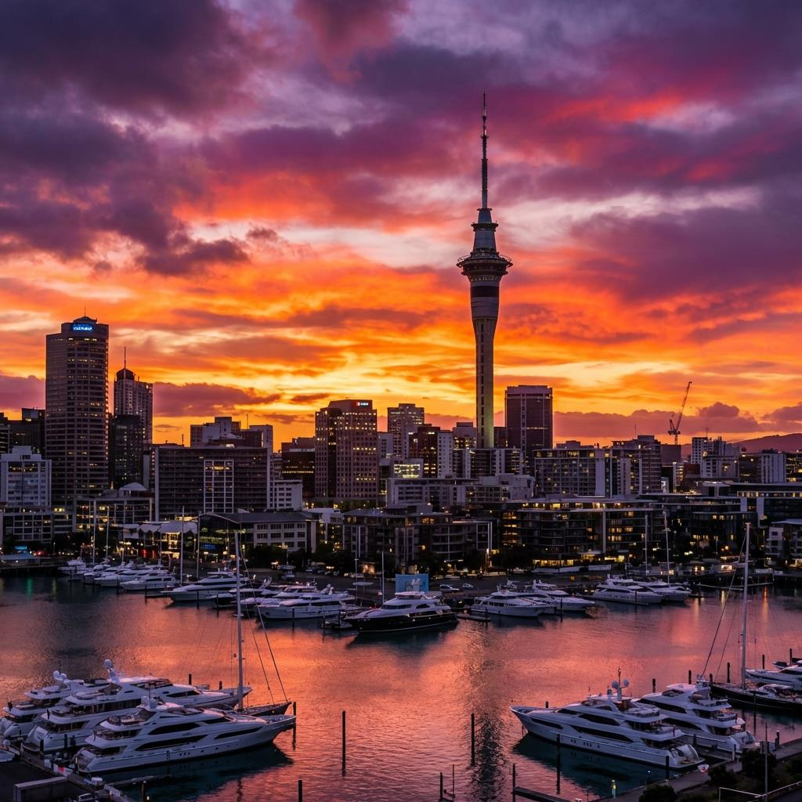
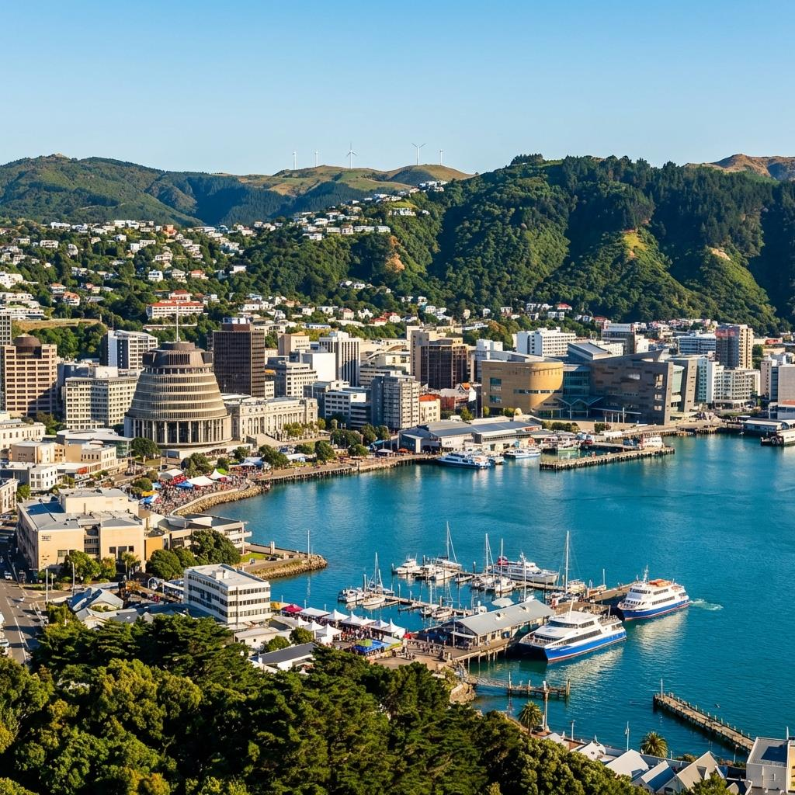
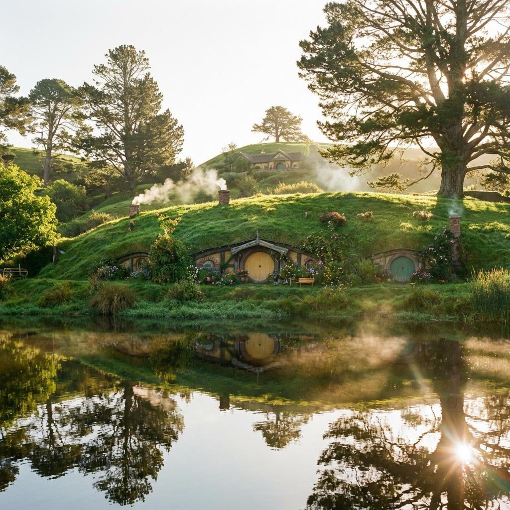
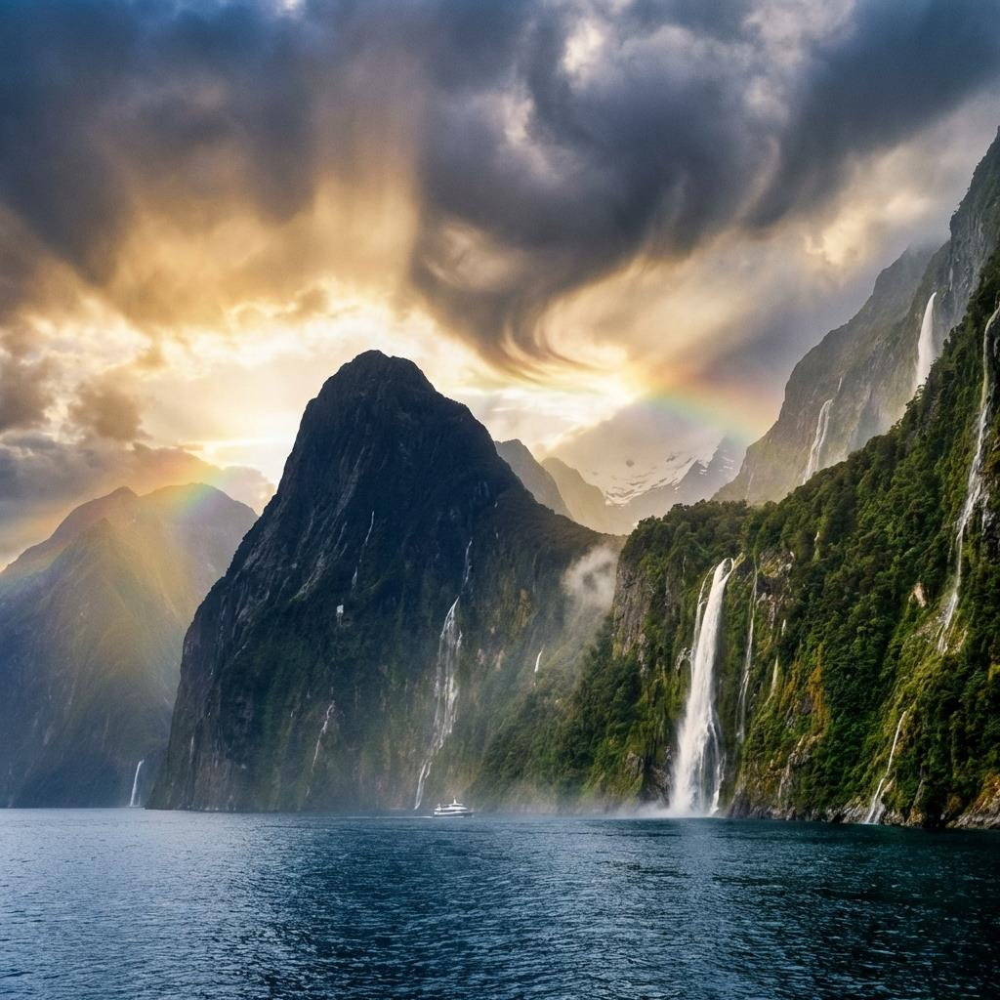
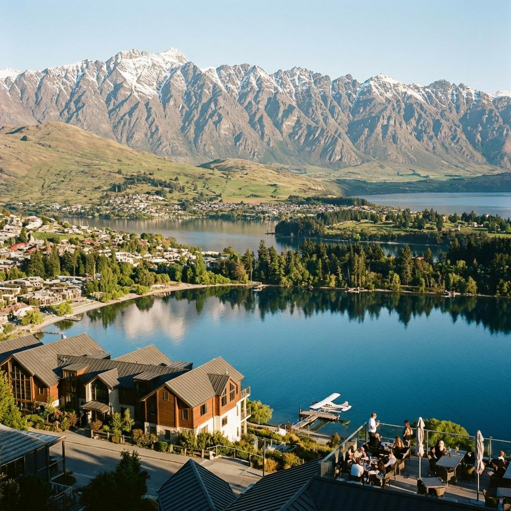
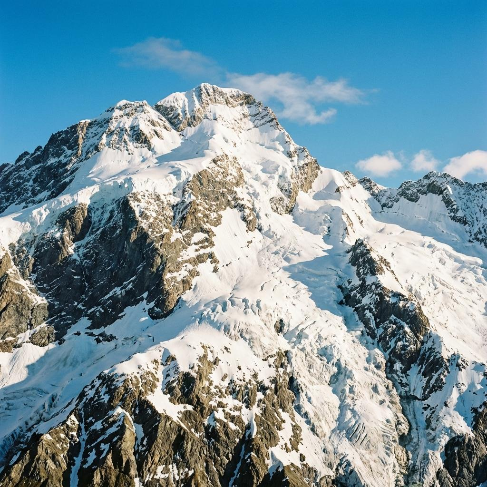
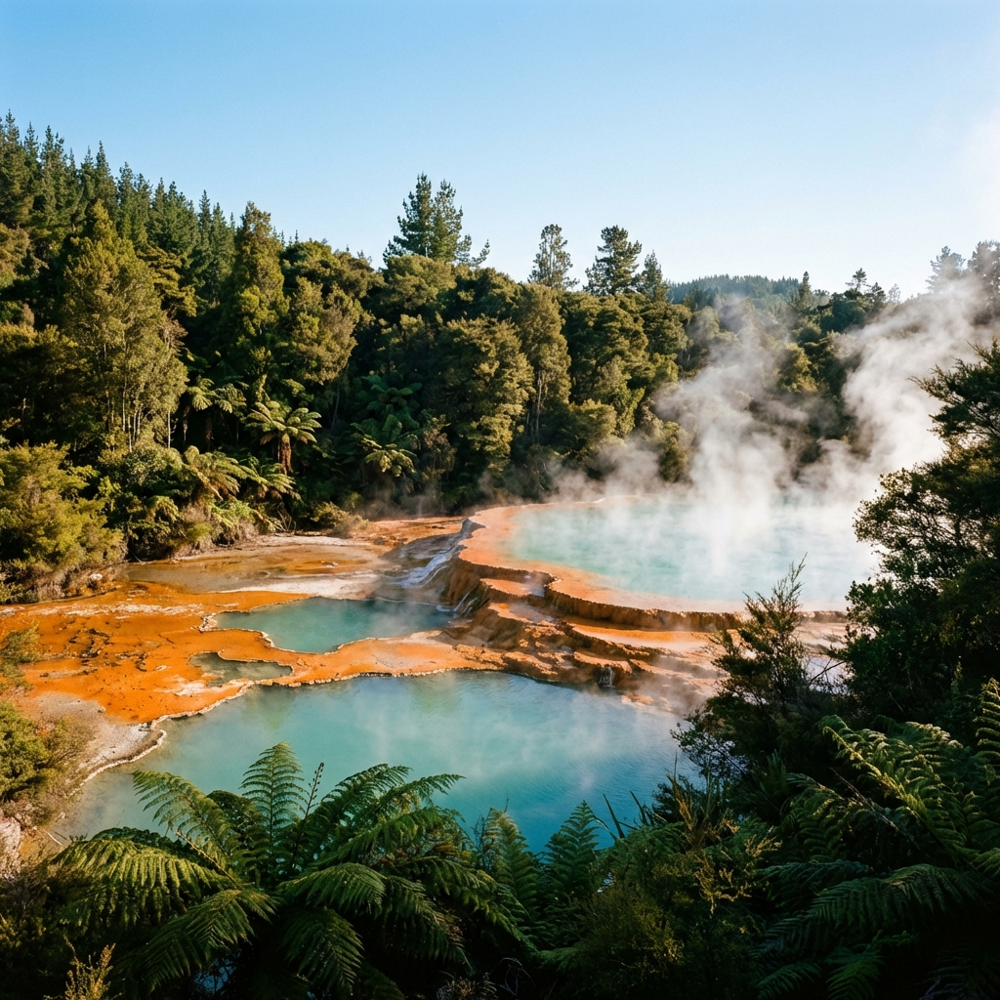
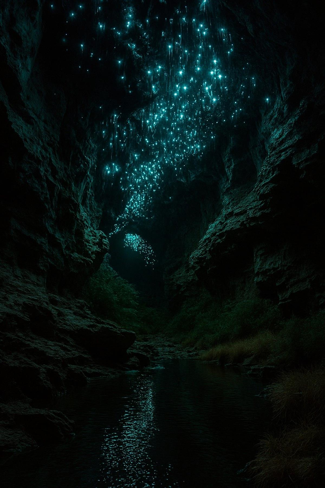

From the emerald peaks of the North Island to the crystalline fjords of the South, New Zealand is a landscape of myth and majesty. Known as Aotearoa—the Land of the Long White Cloud—this island nation offers a rare blend of untamed wilderness, world-class luxury, and deep indigenous heritage.

Auckland is New Zealand's largest and most vibrant city, a sparkling metropolis built on a volcanic field and surrounded by two distinct harbors. Known as the "City of Sails," its waterfront is constantly alive with the white canvas of sailboats and the sleek lines of luxury yachts.

Located at the southern tip of the North Island, Wellington is often called the "coolest little capital in the world." It is a city defined by its creative energy, compact size, and stunning harbor setting.

For fans of J.R.R. Tolkien’s Middle-earth, no trip to New Zealand is complete without a visit to the Hobbiton Movie Set. Located in the rolling green hills of Matamata, this permanent set is a masterpiece of cinematic detail.

Milford Sound is perhaps New Zealand's most famous natural landmark, described by Rudyard Kipling as the "eighth wonder of the world." Located deep within Fiordland National Park, this fjord is a place of breathtaking verticality.

Queenstown is a town that needs no introduction, world-renowned as the adventure capital of the world. Set on the shores of Lake Wakatipu and framed by the dramatic, jagged peaks of the Remarkables mountain range.

Aoraki / Mount Cook is the highest mountain in New Zealand and a sacred site in Māori culture. Located in the heart of the Southern Alps, the national park that bears its name is a land of massive glaciers.

Rotorua is a place where the earth’s raw power is visible at every turn. Located in the North Island's volcanic zone, the city is famous for its bubbling mud pools, steaming vents, and powerful geysers.

Deep beneath the rolling hills of the King Country lies a hidden world of limestone formations and subterranean starry skies. The Waitomo Glowworm Caves are a natural phenomenon unique to New Zealand.
New Zealand is a country that stays with you long after you leave its shores. It is a place where the grandeur of nature is matched only by the warmth of its people. Whether you are exploring its sophisticated cities or its silent fjords, Aotearoa offers a sense of wonder that is increasingly rare in the modern world. Safe travels!
Every destination and accommodation is hand-selected to meet the highest standards of luxury.
Book directly with verified premium providers to ensure the best rates and exclusive perks.
Our worldwide presence ensures you have premium support wherever your journey takes you.
"Luxe Voyages didn't just book a trip; they crafted an unforgettable experience. Every detail was handled with unparalleled professionalism."